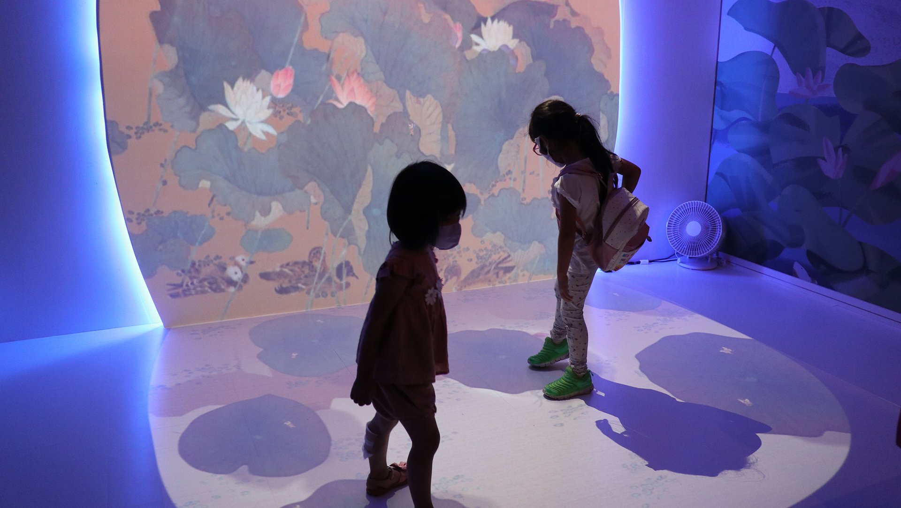

The museum contains artifacts and artworks from numerous periods, offering a breadth and depth of information that serves as a valuable source of knowledge and spiritual meaning. With such a feast to behold, visitors tend to linger. The oldest known artworks in the world are cave paintings in France’s Grotte Chauvet, or Chauvet Cave, which are approximately 36,000 years old. Consisting mostly of dynamic depictions of various land animals, these grand paintings make the countless tourists who visit each year feel as if the animals are actually present. Historical remains such as these cave drawings tell an exciting story. By proving the existence of various creatures and objects during past periods, their art became a source of wonder for modern day viewers.
Different cultures assign their own meaning to imagery. In order to create positive cultural symbols, people add images to paintings or implements then display these decorative items throughout the home to seek good fortune and avoid calamities. Aristocrats choose more expensive and refined paintings and calligraphy which serve the same purpose. Due to the limitations of science and technology, people in the past did not possess a strong understanding of the world. Relying on their imaginations and what they read in books or heard from others, they drew things that they had never seen. Depictions of exotic plants and animals that became part of the historic record make it seem as if these unusual organisms existed.
The plant and animal images shown in the "Vivid Ecological Appearances" section, including "Lotuses in the Wind at Taiye" by the Song Dynasty artist Feng Ta-yu, the series of works from the Qing Dynasty artist Giuseppe Castiglione, and the Qing Dynasty artifacts "Rich and Varied Products of the Sea" and "Fish Oddities," each contain magnificent ecological creatures worthy of study.
The vast ocean is home to infinite organisms and has supplied mankind for generations. Do you want to know how the ancients perceived the ocean and its abundant life forms?
This installation was inspired by Rich and Varied Products of the Sea, a compendium of fascinating sea creatures by 18th century Qing Dynasty painter Nie Huang, demonstrating the integration of science and art at the time.
In the Animated Art – Interactive Painting Projections installations, visitors can see animated versions of animals they draw interspersed among creatures from Rich and Varied Products of the Sea and Fish Oddities. Projections onto large cloth screens create an immersive experience.
【Origin of the concept】
Rich and Varied Products of the Sea
Nie Huang, Qing Dynasty (1644-1911)
Album leaf, ink and colors on paper, 30.4 x 68 cm
【Origin of the concept】
Fish Oddities
Qing Dynasty (1644-1911)
Album leaf, 33 x 22 cm
Explore the Flora and Fauna of Castiglione
Development team: City University of Hong Kong
Viewers explore two virtual landscapes created in the style of Castiglione by moving a TV screen along rails mounted on a wall. By exploring these panoramas, brilliantly imagined by two Hong Kong artists and populated with plants, birds and animals in the style of Castiglione, viewers can discover the original paintings. The Linear Navigator technology was invented by Professor Jeffery Shaw from the School of Creative Media at City University of Hong Kong.
Today's automobiles, airplanes, ships, and submarines are modeled on natural organisms. Perhaps the most famous example of people imitating and even reproducing biological structures found in the animal kingdom were sketches Leonardo da Vinci made of mechanical birds in the 15th century.Remarkable progress has been made with this type of biomimicry. Time and again, technological development has shown that an important factor in making breakthroughs is following principles observed in the animal kingdom.
The exhibition includes multi-joint robotic fish developed at National Taipei University of Technology. Researchers used high-resolution images to analyze and copy minute movements of carp swimming. Manufacture that included 3D printing of the fish body and molding of a soft silicone tail led to a highly realistic appearance. By observing the fish, people can gain a greater understanding of nature.

Summer Lotus
"The green of lotus leaves stretch to the heavens; Lotus blossoms shine with their red in the sunshine."
At the peak of summer, the pulse of life swells to a crescendo. The world is in high spirits, and plants and animals everywhere are on the move. In an elegant pond, the summer charms are abundant: lotus flowers sway in the breeze, a raft of ducks forages for food, and butterflies dance upon the air. In the Path through Time and Space (Summer Lotus: Wind-activated Interactive Installation), the painting entitled "Breeze on the Imperial Lotus Pond" is projected onto the wall and floor in an L-shape. Description of the image on the wall: shifting between night and day modes, natural sounds change with the environment, the sounds of cicadas singing and other insects chirping can be heard, and the lotus leaves and flowers sway with the wind, opening and closing. Description of the image on the floor: as visitors make their way across the image on the floor, duckweed gathers and then dissipates and the water appears to ripple where they walk. When visitors step on a lotus petal, butterflies which had been resting on the petal slowly flutter up the image on the wall, giving visitors a feeling for the vitality of summer, while the pond full of lotuses present a scene teeming with life.
【Origin of the concept】
Lotuses in the Wind at Taiye
Feng Dayou, Song Dynasty
Album leaf, ink and colors on silk, 23.8 x 25.1 cm
"Lotuses in the Wind at Taiye", a painting by the Soong Dynasty artist Feng Dayou, conveys a scene from the full height of summer and bathes the viewer in a conceptual shower of green. The thick emerald lotus leaves kiss the breeze by swaying, opening, and closing softly, while red and white lotus flowers, graceful and svelte, intoxicate viewers with their delicate fragrance. Pairs of ducks paddle leisurely through the greenery. Patches of duckweed together with flower petals undulate with the rippling water. Butterflies dance among the flowers, and a sparrow can be seen soaring against the blue sky. Within this miniature lotus pond, a scene conveying the grandness of summer and the burgeoning life all around can be seen.